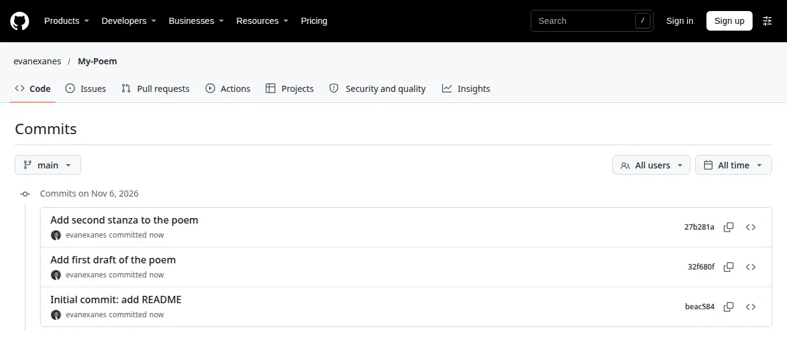

The Git and GitHub for Poets tutorials ask you to make a repository and then branches, using a poem as the content. I created a public repository named My-Poem and made three commits on main.

Two branches, two outcomes
I made a branch called third-stanza, wrote the new stanza there and opened pull request #1 on GitHub. Merging it brought the stanza into main. I made a second branch, alternate-ending, and never merged it. After that I edited main again, so the repository now holds one ending that was accepted and another that is still waiting.
Seeing both on the branches page made the idea concrete: a branch is a separate line of edits, and a merge is the decision to bring one of those lines back.
What I handed in
Each tutorial ended in a one-page PDF with the repository link. For 1.1 the evidence was a screenshot of the commits, and for 1.2 a screenshot of the branches. A pull request is where a change is discussed before it is merged. With only me in the repository there was nobody to review it, but the page still records what was merged and when.
Getting signed in
My SSH key was not on my GitHub account. The command gh auth login -h github.com -p https -w signs in over HTTPS through the browser, and that was enough to push.
Checks before submitting
A public repository can be opened by anyone, including the instructor. Before the first push I checked the tracked files for tokens and .env files. After it, I opened the repository while logged out to confirm it loads without a login.